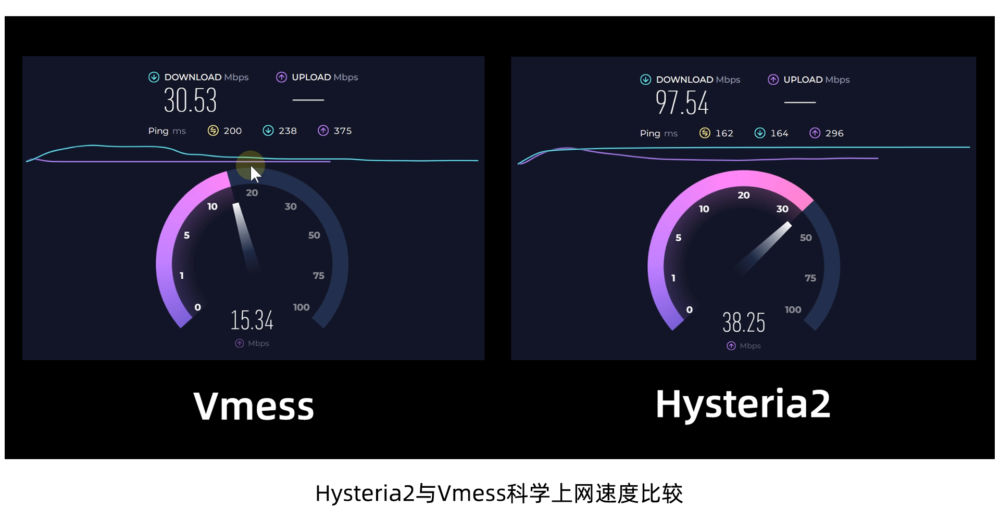

🕓2024年9月18日
视频教程：▶https://youtu.be/ujioQAzQL8w
Hysteria2是一款基于HTTP/1.3 QUIC魔改的翻墙协议，底层是用UDP协议进行数据传输，能够在网络拥堵、丢包等恶劣环境中提升科学上网体验。
Hysteria2通过修改过的拥塞控制算法来最大化吞吐量，最大限度榨干代理节点服务器的网速，拯救垃圾vps。
Hysteria2相比Hysteria1，大幅提升了稳定性，支持nginx反代伪装，预防长城防火墙gfw的主动探测，有效减少被封锁的概率。
项目地址：https://v2.hysteria.network/zh/
项目github地址：https://github.com/apernet/hysteria

Hysteria2节点搭建步骤
一、准备工作
1、一台境外VPS主流系统，例如：Debian/Ubuntu/CentOS
本期搭建用的VPS网址：https://bit.ly/3hBENuF
--------------------------
Vultr 注册地址：https://www.vultr.com/?ref=9554306
新手推荐使用 Vultr 服务器，按时计费，不用了可以随时删除服务器就停止收费了，最低6$/月。
2、下载并安装FinalShell SSH工具
Windows版下载地址：点击下载
macOS版下载地址：点击下载
二、搭建步骤
更新 VPS 系统，安装组件
下面环境的安装方式，大家根据自己的系统选择命令安装就好了。
1、Debian/Ubuntu系统执行以下命令：
复制 apt update -y && apt install -y curl && apt install -y socat
2、CentOS系统执行以下命令：
复制 yum update -y && yum update -y && yum install -y socat
三、Hysteria 2 一键安装脚本
复制 wget -N --no-check-certificate https://raw.githubusercontent.com/flame1ce/hysteria2-install/main/hysteria2-install-main/hy2/hysteria.sh && bash hysteria.sh
四、Hysteria 相关命令
复制
systemctl start hysteria-server.service # 启动 hysteria 服务
systemctl enable hysteria-server.service # 设置 hysteria 服务 开机自启
systemctl restart hysteria-server.service # 重启 hysteria 服务
systemctl stop hysteria-server.service # 停止 hysteria 服务
systemctl status hysteria-server.service # 查看 hysteria 服务 状态
五、开启云服务器端口
节点如果不能正常使用，请先放行端口，将 443 改为你节点的端口，然后，再将指令复制到搭建工具，再点回车。
复制 iptables -I INPUT -p tcp --dport 443 -j ACCEPT
六、客户端配置
1、Windows 建议使用 V2rayN，点击下载>>
如果你不清楚下载哪个文件，请下载 “zz_v2rayN-With-Core-SelfContained.7z” 解压使用。
2、IOS/MAC 建议使用 Shadowrocket
需要使用美区 AppleID 登录 App Store 下载，如果没有美区ID，可以点击免费申请一个 美区AppleID>>
3、安卓手机 建议使用 Hiddify或者NekoBox
可以在 Google Play 商店下载，或者APK安卓下载>>
七、常见问题及解决方法：
1、搭建的账号之前能用，突然不能用了，怎么解决？
A：如果ip不能ping通，FinalShell不能直接连接vps服务器，说明ip被墙了，需要换ip。vultr开通和删除服务器非常方便，新服务器即新ip，为了保证开通的新服务器ip和旧ip不一样，先开新服务器出现ip后再删旧服务器。其它大多数vps服务商换ip都要额为收费。
B: 如果ip正常，那么多半是端口号被封了，此时需要换端口号，可以重新搭建。
2、需要安装bbr加速吗？
bbr加速是tcp加速，而hysteria是Quic(udp)协议。所以不用再部署bbr加速，当然自己想部署也可以，部署bbr加速可参考其它教程。